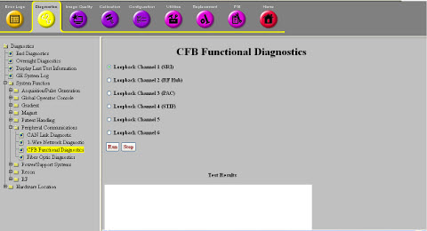

Operating Documentation
Direction 5670006, Rev# 1
Discovery MR750w GEM Service Methods
Module Version 6.0, Version Date 10/12/11
Operating Documentation |
Diagnostics >> System Function >> Patient Handling >> CFB Functional Diagnostics
Diagnostics >> Hardware Location >> Pen Panel Cabinet >> CFB Functional Diagnostics
Illustration 1: CFB Functional Diagnostics

This diagnostic tests the ability of the CAN Fiber-optic Board’s (CFB) fiber-optic connections to both produce and receive signals.
This diagnostic requires a fiber-optic loop-back connector. There is a separate diagnostic for each of the six fiber-optic channels on the CFB. The test can be executed for one channel at a time. The diagnostic:
Places the channel being tested into a direct control mode, after which the CFB commands an asserted signal and checks that the signal is received.
Checks that when the signal is de-asserted, the received signal is also de-asserted.
This check does not perform a speed/performance test of the fiber optic signal.
CFB
Have the fiber-optic loop-back connector available for use (obtain from service diagnostic kit).
This diagnostic is available from the Common Service Desktop when required system components are available.
Have the short section of fiber-optic cable available for use (obtain from optional Service Cable Hardware for Troubleshooting kit; see Direction 5670005, Optima MR450w & MR450w GEM, Discovery MR750w & MR750w GEM FRU Manual. Each end of this cable is terminated with a single fiber connector that each plugs individually into the Tx and Rx ports in the dual-fiber optic connectors used on the CFB. At the CFB connector to be tested, attach one end of the fiber cable to the transmit Tx port and loop the other end around and to the receive Rx port so as to loopback transmit to receive.
For further information, refer to the Interactive Block Diagrams.
Select channel and start diagnostic.
After the pop-up displays for the channel to be tested, disconnect system cable and connect the fiber-optic loopback cable.
Click Yes on the pop-up window.
The loopback test is performed and a pop-up displays displayed upon completion.
Re-connect the system cabling.
Click Yes on the pop-up window.
If the loopback test fails for a channel and the loopback connector is functional (works on another channel), replace the CFB board.
| ||||
| Prior to scanning, a TPS reset is required. | ||||